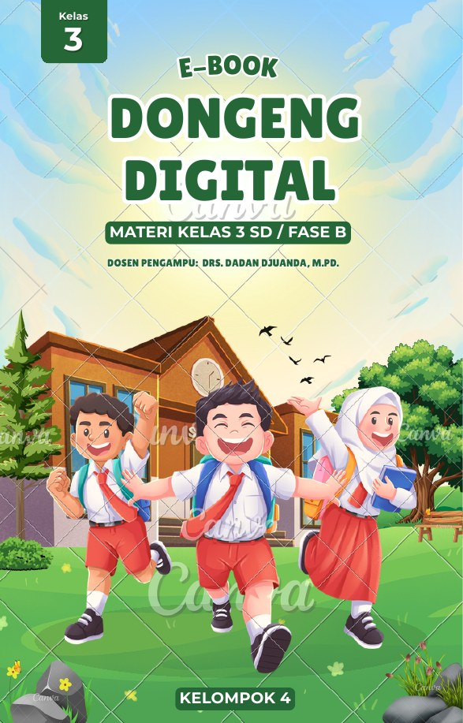

Capaian pembelajaran
Pada Fase B, murid memahami ide pokok informasi dari teks nonsastra berbentuk teks aural (teks yang dibacakan dan/atau didengarkan), dan memahami isi teks sastra berbentuk teks aural.
E-book Bahasa Indonesia · Fase B · Kelas III SD
Modul digital untuk melatih kemampuan menyimak: mengenali tokoh, menelusuri perbuatan dan akibatnya, lalu merumuskan pesan moral dengan bahasa anak sendiri.

E-book lengkap
Materi, audio, permainan, dan LKPD ada dalam satu e-book. Geser halaman atau buka layar penuh supaya lebih nyaman dibaca.
Ketuk Layar penuh untuk membaca lebih lebar; cubit layar untuk memperbesar teks. Buka versi Canva
01Isi modul
Semua cerita dibaca dengan langkah yang sama: kenali tokoh, catat perbuatannya, hubungkan dengan akibat, lalu simpulkan pesan moralnya. Karena polanya berulang, murid makin mandiri di cerita berikutnya.
Mulai dari halaman pertamaMenyusun urutan peristiwa, lalu memasangkan perbuatan tokoh dengan akibat yang muncul.
Menemukan perbuatan yang memicu konflik dan menuliskan pesan moral dengan kalimat sendiri.
Mengisi bagan tiga bagian, dari konflik awal sampai akibat yang mengubah nasib tokoh.
Menelusuri perbuatan yang melanggar hormat kepada orang tua, lalu merumuskan akibat dan pelajarannya.
02Alur belajar
Inti modul ini adalah scaffolding: murid dibantu penuh di awal, lalu bantuan dilepas bertahap sampai ia mampu bekerja sendiri.
Bantuan audio
Audio dongeng diputar per bagian. Sebelum mulai, guru menyampaikan tujuan dan kosakata yang perlu dikenali.
Pertanyaan pemantik
Siapa tokohnya, apa yang ia lakukan, mengapa? Pertanyaan sederhana menjaga perhatian tetap pada jalan cerita.
Contoh & latihan terbimbing
Guru memberi satu contoh hubungan, lalu murid melengkapi bagian lain secara berkelompok.
Latihan mandiri
LKPD dan permainan interaktif dikerjakan sendiri. Guru menanyakan alasan jawaban, bukan hanya benar atau salah.
03Untuk guru
Modul disusun untuk satu tujuan pembelajaran pada elemen menyimak, dengan bantuan yang jelas dan indikator yang bisa diamati saat pembelajaran berlangsung.
“Bantuan … kemudian dikurangi secara bertahap untuk memberi kesempatan kepada anak untuk mandiri dalam mengerjakan tugasnya.”
Bagian strategi scaffolding, e-book Dongeng Digital
Pada Fase B, murid memahami ide pokok informasi dari teks nonsastra berbentuk teks aural (teks yang dibacakan dan/atau didengarkan), dan memahami isi teks sastra berbentuk teks aural.
TP 3.10 · Kelas III
Peserta didik mampu menelaah hubungan antara perbuatan tokoh, akibat yang dialami, dan pesan dalam dongeng yang dibacakan dengan menyajikannya pada bagan sebab-akibat sederhana.
CP dan TP diringkas dari isi modul. Sesuaikan kembali dengan dokumen kurikulum yang berlaku di sekolah.
LatihanSetelah membaca
Ruang Cek Dongeng Digital memuat latihan sebab-akibat untuk empat cerita yang sama, dengan tingkat bantuan yang bisa dipilih. Jawaban tersimpan di perangkat—tidak perlu akun.
Situs latihan dikelola terpisah dan dibuka di tab baru.
04Penyusun
E-book ini disusun sebagai bahan ajar Bahasa Indonesia kelas III SD, Fase B, pada elemen menyimak.